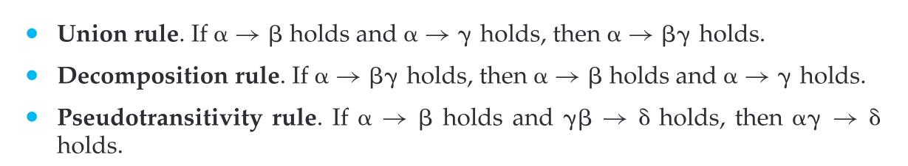
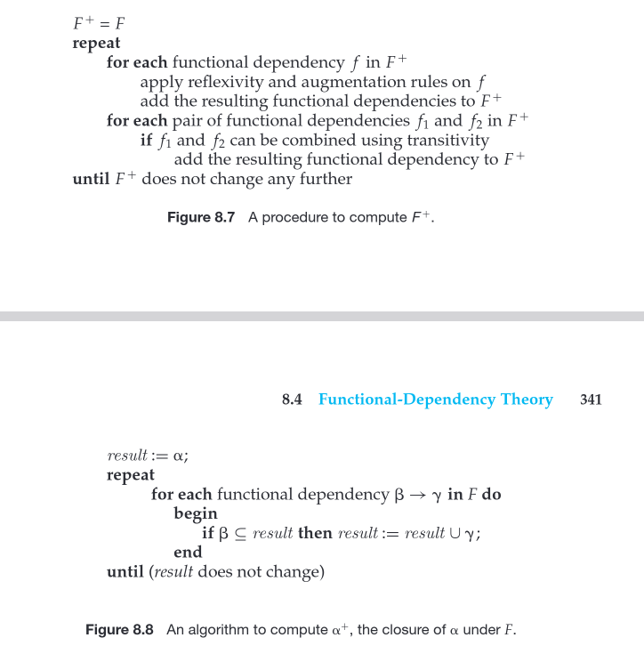

Domain is atomic if the elements are indivisible units
Ex: sets of names, id numbers like CS101 that can be broken up into parts
Relational schema R is in first normal form if the domains of all attributes are atomic
A prime attribute is part of any candidate key
R is in 2NF if
1. it is in 1NF
2. every non primary key is dependent on the primary key
No partial dependency
A partial dependency happens when a column (like productDescription) depends on only part of a composite key instead of the whole key. productDescription depends on productid and not order id and they together are a candidate key composition.
(prodid, proddescr) ; (prodid, orderid, quatity)
the notation is a shorthand way of describing how the original table is split into two smaller tables during the decomposition process.
3NF
It should be in 2NF
There should not be any transitive deps,
what is transitive dependency? Column A determines Column B (A -> B) Column B determines Column C (B -> C) Therefore Column A indirectly determines column C (A -> C) Student Id, department id, department name student id -> department id -> department name | student determines department
A prime attribute is part of a candidate key (a column or combination of columns that can uniquely identify a row).
A non-prime attribute is not part of any candidate key.
In the example:
studentID is a candidate key (so it’s prime).
departmentID and departmentName are non-prime attributes because they aren’t part of the key.
we use lowercase greek letters to refer to set that may be a schema but when we use roman capital letter then it is a schema superkey is denoted by K lowercase letters are used for relations like r relation = instantce of r legal instance = satisfies all real world constraints superkey = collective set of attributes that allows us to identify a tuple in relation functional dependencies allow us te express constraints that we cannot ekpress with superkeys closure = the set of all dependencies that can be inferred given the set F Example inst dept (ID, name, salary, dept name, building, budget) ID and dept nome for a superkey
Similarly, the department schema is in BCNF because all of the nontrivial func- tional dependencies that hold, such as: dept name → building, budget 334 Chapter 8 Relational Database Design include dept name on the left side of the arrow, and dept name is a superkey (and the primary key) for department. Thus, department is in BCNF.
BCNF form: A database is in bcnf if every memeber of the set of relation schemas that makes the design is in BCNF
In fact, you can verify that any schema with only two attributes is in BCNF by definition.)
BCNF requires that all nontrivial dependencies be of the form a -> b where a is superkey. 3NF allows nontrivial functional dependencies whose left side is not a superkey before we define 3NF, we call that candidate key is a minimal superxey, that is, a superkey no proper subset of which is also a superkey.
Armstrongs axioms Reflexivity rule: if a is a set of attrs and b is a subset of a then a -> b hold Augmentation rule: if a -> b holds and g is a set of attrs then ga -> gb holds Transitivity rule: if a -> b holds and b -> g holds then a -> g holds
some other shit
we can take both otgether as a candidate key
each can be prime attrs of the candidate key
3NF violation non prime gives a non prime
so then we can make table for each everything dependency check if the candidate key is in these tables if not then we add a new table and put candidate key a -> b
bc -> d r = A B C D E
so it can be either a or c so ace is the candidate key
now closure of ace a c e are primes b -> d there are np to np create r = Ab r2 = bcd
a set of n has 2^n subsets and there are in total 2^2n functional deps
algorithms for computing closure and procedure
To get to bcnf STEP 1 Find what violates BCNF example AB -> CD A -> C D -> E B -> D the candidate key is ab cz ab -> CD then d -> e then b -> d so ab -> abcde which is the R so CK when we look at D -> E we can see that e is absent on the left side ab -> cd holds bcnf d is not the candidate key so d -> e violates bcnf # the first attr has to be CK STEP 2 1: Find the closure of the violation of bcnf 2: R - X^+ - X example D+ = DE then R1 is DE and R2 IS ABCDE - DE + D is equal to ABCD STEP 3 check if each sub relaction is in bcnf if there is violation we repeat step 2 exapmle R1 is D-> E so D now is candidate so holds bcnf R2 -> ABCD CK is AB AB -> CD A -> C B -> D so now A is candidate key since A -> C violates BCNF Ck= A then R3 is AC then A-> C BCNF and R4 CK = AB then STEP 4 Final decomp is copmosed of sub relations that all their func deps hold bcnf FOR MIINIML COVER An attribute X is extraneous in a functional dependency X → Y if the dependency still holds after removing X from the left-hand side. IF ALL VALUES IN A ANY OF THE ROWS ARE ALL ALPHAS THEN IT IS LOSSLESS A decomposition is dependency-preserving if, after decomposition, all the functional dependencies can still be enforced by the decomposed relations (i.e., the decomposition preserves the ability to enforce all the original functional dependencies).